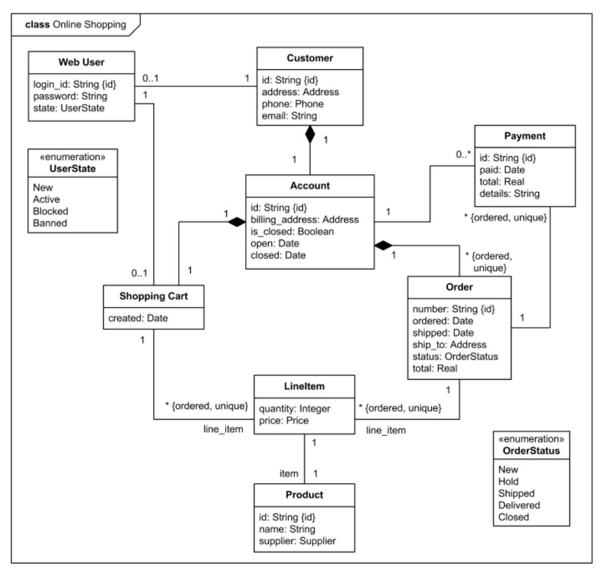
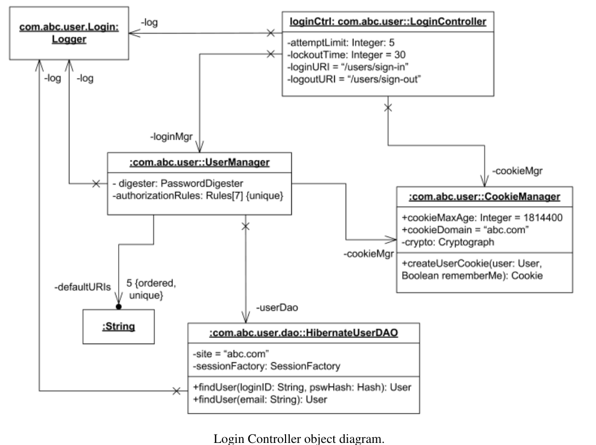

Trường ĐH Công nghệ - Đại học Quốc gia Hà Nội
Giảng viên: Lương Sơn Bá, Nguyễn Tiến Đạt
Object nào gọi object nào, message nào đi qua, thứ tự xử lý ra sao.
Class nào tồn tại, giữ dữ liệu gì, có method gì, quan hệ và multiplicity ra sao.
W5 dùng kết quả từ interaction diagram để suy ra cấu trúc OOP.
Khuôn mẫu: class, attribute, method, inheritance.
Snapshot: object cụ thể và giá trị cụ thể.
Class Diagram mô tả khuôn mẫu; Object Diagram cho một snapshot cụ thể.
| Thành phần | Mô tả | Khi đọc cần hỏi |
|---|---|---|
| Class | Thực thể chính, thường biểu diễn bằng hình chữ nhật chia 3 phần. | Lớp này đại diện cho khái niệm miền hay service nào? |
| Attribute | Thuộc tính hoặc dữ liệu mà class nắm giữ. | Lớp cần giữ trạng thái gì? |
| Method | Hành vi hoặc thao tác xử lý của class. | Lớp nhận message nào và xử lý ra sao? |
| Relationship | Mối quan hệ giữa các class. | Các class phụ thuộc, sở hữu hay kế thừa nhau? |
| Multiplicity | Bản số xác định số lượng object tham gia liên kết. | Một object ở đầu này liên quan đến bao nhiêu object ở đầu kia? |
Mũi tên nét đứt.
Client --> Service
Đường nét liền.
Order - Payment
Hình thoi rỗng.
Whole-part lỏng.
Hình thoi đặc.
Whole-part chặt.
Mũi tên tam giác rỗng.
Subclass -|> Superclass
| Quan hệ | Ký hiệu | Ý nghĩa |
|---|---|---|
| Dependency | Mũi tên nét đứt | Một class sử dụng hoặc phụ thuộc tạm thời vào class khác. |
| Association | Đường nét liền | Quan hệ kết hợp hoặc biết nhau giữa các class. |
| Aggregation | Đường nét liền, hình thoi rỗng | Quan hệ tập hợp; phần vẫn có thể tồn tại độc lập. |
| Composition | Đường nét liền, hình thoi đặc | Quan hệ cấu thành; phần phụ thuộc vòng đời vào toàn thể. |
| Inheritance | Mũi tên tam giác rỗng | Quan hệ kế thừa giữa superclass và subclass. |
Nắm bắt cấu trúc tĩnh và kiến trúc lớp của hệ thống.
Lập trình viên dùng class, attribute, method làm base để viết code.
Định hình cấu trúc dữ liệu trước khi thiết kế bảng và quan hệ.
Nhìn ra class quá nhiều trách nhiệm, quan hệ sai hoặc multiplicity thiếu.
Developer, tester và người thiết kế domain cùng có một bản đồ cấu trúc.
Lưu lại cấu trúc hệ thống để bảo trì và onboarding.
| Bước | Việc cần làm |
|---|---|
| 1. Xác định class | Từ các lifeline trong Sequence Diagram, suy ra các class tương ứng. |
| 2. Xác định method | Dựa vào message trỏ vào lifeline, tạo method cho class nhận. |
| 3. Xác định attribute | Xác định dữ liệu cần để thực hiện method và duy trì trạng thái. |
| 4. Thêm relationship | Xác định cách class liên kết: dependency, association, aggregation, composition, inheritance. |
| 5. Xác định multiplicity | Đặt quy tắc số lượng object tham gia liên kết. |
| 6. Tách responsibility | Dùng SOLID/SRP để chia nhỏ class ôm đồm quá nhiều việc. |
| 7. Kiểm tra và hoàn thiện | Refactor design để đảm bảo tối ưu, thêm note nếu cần. |
Mỗi participant ổn định trong sequence có thể trở thành một class hoặc component.
Message đi vào lifeline gợi ý method mà class nhận cần cung cấp.
Dữ liệu cần nhớ giữa các bước xử lý trở thành attribute hoặc entity field.

| Chi tiết trên hình | Cách đọc trong mô hình |
|---|---|
| Customer - Account | Mỗi customer có đúng một account. |
| WebUser - Customer | Customer có thể có web user identity; WebUser có trạng thái hợp lệ. |
| Kim cương đen tại Account | Account sở hữu Shopping Cart và Orders theo quan hệ composition. |
| Order - Payment với 0..* | Một order có thể chưa có payment hoặc có nhiều payment. |
| LineItem - Product | Line item nối cart/order với một sản phẩm cụ thể. |
| UserState, OrderStatus | Enumeration giữ các trạng thái hợp lệ. |
| Thành phần | Mô tả | Khi đọc cần hỏi |
|---|---|---|
| Object | Đối tượng cụ thể đang tồn tại, ví dụ obj : ClassName. | Đây là instance nào của class nào? |
| Attributes & Values | Thuộc tính đi kèm giá trị cụ thể, ví dụ status = "Active". | Snapshot này đang ghi lại trạng thái gì? |
| Links | Đường nối giữa object, hiện thực hóa association trong runtime. | Object nào đang liên kết trực tiếp với object nào? |
Class Diagram nói có association; Object Diagram cho biết hiện tại object nào đang nối với object nào.

| Chi tiết | Cách đọc |
|---|---|
| loginCtrl | Instance của Login Controller với các slot Integer/String cụ thể. |
| User Manager, Cookie Manager, Logger | Các object liên quan trực tiếp đến quá trình login. |
| Hibernate User DAO | DAO được User Manager dùng để tìm user theo loginID hoặc email. |
| defaultURIs | Collection 5 String có thứ tự và unique. |
| Link không navigable backward | Đọc được hướng biết/gọi giữa các object ở thời điểm chụp. |
Cùng mô tả cấu trúc của một hệ thống, nhưng ở hai mức khác nhau.
Class Diagram là khuôn mẫu; Object Diagram là sản phẩm instance từ khuôn mẫu.
Có thể dùng object snapshot để kiểm chứng class, multiplicity và quan hệ.
| Tiêu chí | Class Diagram | Object Diagram |
|---|---|---|
| Mục đích chính | Mô tả cấu trúc, quy tắc và khuôn mẫu của hệ thống. | Mô tả trạng thái của hệ thống tại một thời điểm thực thi. |
| Cách tổ chức biểu đồ | Mô tả quan hệ giữa các lớp. | Mô tả quan hệ thực tế giữa các đối tượng. |
| Thành phần chính | Class, Attribute, Method. | Object, Attribute Values. |
| Ứng dụng chính | Thiết kế kiến trúc, làm base cho code OOP. | Validate thiết kế: snapshot, runtime example. |
| Mức độ dùng thực tế | Rất phổ biến. | Ít dùng hơn, thường dùng để test/validate. |